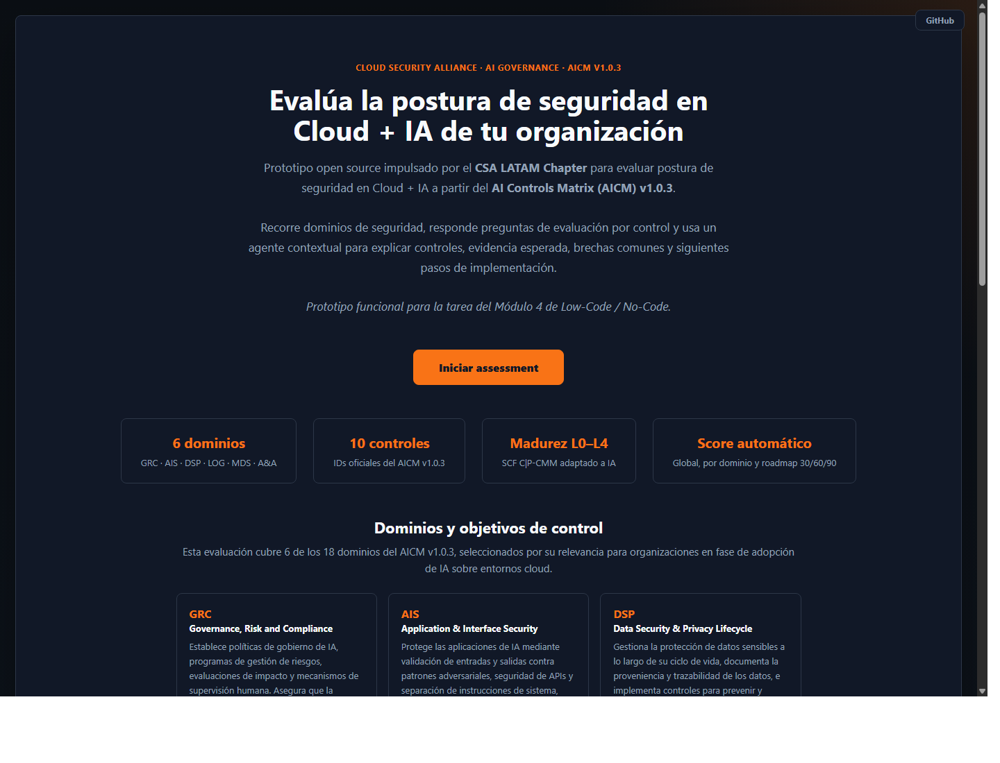
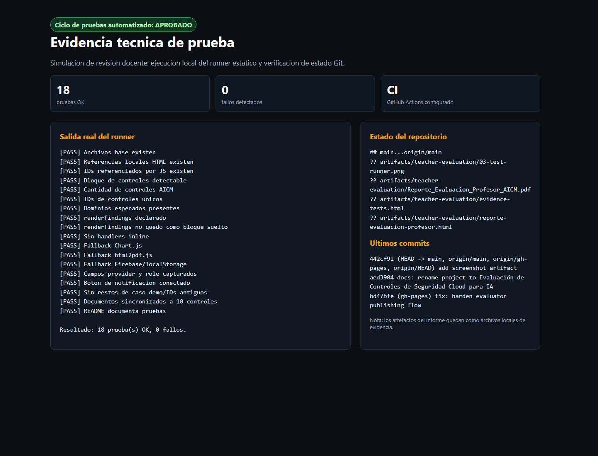

Simulacion de evaluacion docente
Reporte de prueba y revision academica
Evaluación de Controles de Seguridad Cloud para Inteligencia Artificial
Evaluacion realizada con postura de profesor del modulo Low-Code / No-Code, revisando criterios de problema, solucion, funcionalidad, evidencia, publicacion y ciclo de pruebas.
94/100
Calificacion simulada: Sobresaliente, con observaciones menores de escalabilidad y validacion semantica real de evidencias.
1. Criterios usados como profesor
La rubrica se construye a partir de los entregables del modulo y del resumen del proyecto: definicion del problema, objetivos de herramienta, justificacion low-code/no-code, alcance/limitaciones, prototipo funcional, evidencia de prueba, publicacion y reflexion individual.
| Criterio | Evidencia observada | Puntaje |
|---|
| Problema, usuario e impacto | Documento ejecutivo identifica lideres GRC/CISO/AI Cloud, brecha regional LATAM, costo/tiempo de assessments y necesidad de operacionalizar AICM. | 15/15 |
| Objetivos, alcance y limitaciones | Alcance acotado a 10 controles, 6 dominios, Firebase, localStorage fallback, PDF/JSON, dashboard y limitaciones declaradas. | 14/15 |
| Justificacion low-code/no-code | Explica Vibe Coding con IA generativa, rapidez, iteracion y validacion temprana. Coherente con prototipo funcional. | 14/15 |
| Prototipo funcional y UX | SPA estatica con wizard, evaluacion por control, evidencia, madurez SCF, dashboard, radar, roadmap y exports. | 19/20 |
| Automatizacion / IA simulada | Analisis simulado de evidencia .txt, scoring por keywords, autoestado de evidencia y notificacion simulada. | 13/15 |
| Publicacion y reproducibilidad | GitHub Pages activo, README actualizado, rama gh-pages publicada y runner PowerShell documentado. | 10/10 |
| Calidad tecnica y pruebas | 18 pruebas estaticas: referencias, IDs, dominios, controles, fallbacks, docs, ausencia de handlers inline y restos demo. | 9/10 |
Veredicto docente simulado: El proyecto cumple ampliamente el objetivo del modulo. Demuestra una solucion funcional, publicada y trazable, con mejoras tecnicas recientes que elevan la confiabilidad del entregable.
2. Paso a paso de la prueba
Paso 1 - Validacion de publicacion. Se verifica que la aplicacion esta disponible en GitHub Pages y que la pantalla inicial comunica claramente valor, dominios cubiertos, modelo de madurez y punto de inicio del assessment.

Captura 1: version publicada en GitHub Pages con landing del evaluador AICM.
Paso 2 - Revision local del prototipo. Se abre la version local para comprobar que la SPA carga sin depender de backend propio y mantiene consistencia visual/funcional.

Captura 2: carga local de la app desde el workspace, util para revisar antes de publicar.
3. Prueba automatizada de regresion
Se ejecuta powershell -ExecutionPolicy Bypass -File tests/run-tests.ps1. El runner cubre bugs probables para esta arquitectura sin framework: referencias rotas, IDs inexistentes, conteo de controles, dominios esperados, funcion renderFindings, fallbacks de CDN/Firebase y consistencia documental.

Captura 3: evidencia del ciclo automatizado con 18 pruebas OK y 0 fallos.
4. Observaciones del profesor
Fortalezas
- Problema real y bien contextualizado: operacionalizacion de AICM en LATAM.
- Prototipo publicado, funcional y alineado con el alcance academico.
- Uso pertinente de low-code/no-code asistido por IA para acelerar validacion.
- Dashboard ejecutivo con compliance, madurez SCF, brechas y roadmap.
- Persistencia cloud con Firebase y fallback local, una mejora importante para resiliencia.
- Ciclo de pruebas automatizado, poco comun en prototipos academicos y muy valioso para detectar regresiones.
Observaciones menores
- El analisis de evidencia sigue siendo simulado y basado en keywords; debe declararse como orientativo, no como auditoria real.
- Para escalar a 243 controles se necesitara separar controles en JSON, agregar busqueda/filtros y quizas paginacion.
- El PDF de reporte podria evolucionar a un formato ejecutivo con portada, anexos y trazabilidad por control.
Recomendacion antes de entrega: Publicar tambien el commit del ciclo de pruebas y confirmar que GitHub Actions queda verde en el repositorio remoto.
5. Conclusion
Como profesor, consideraria el entregable apto para una evaluacion alta. El proyecto no solo implementa una idea relevante, sino que demuestra trazabilidad academica, publicacion real, controles de calidad y una narrativa consistente entre necesidad, solucion y alcance.
Nota simulada: 94/100. Equivalente sugerido: 6,6/7,0.
Este informe fue generado automaticamente desde el workspace local y contiene capturas producidas con Chrome headless.